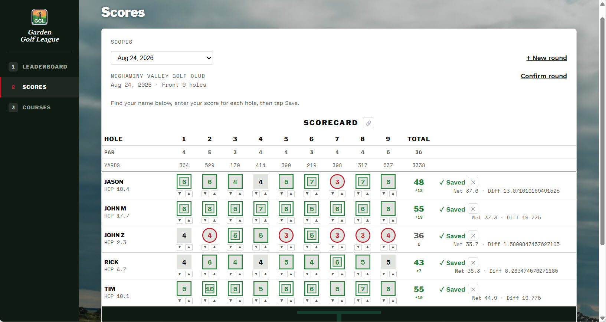

Garden Golf League

Garden Golf League is a live scoring and handicap app built for my own weekly golf league, on the same Airtable + Vercel serverless pattern as Home Assistant and What Don't You Want.
The Scores tab drives the whole workflow: pick who's playing from a roster checklist, set the date and course, and the app builds a real scorecard — hole-by-hole par and yardage, per-player stepper entry, and live Out/In/Total subtotals. Saving computes Net and Differential immediately.
Features in production
True WHS Handicap Index calculation (the real Rule 5.1 scaling table) computed server-side and written back to Airtable, feeding a leaderboard ranked by handicap with tie handling — showing both the 9-hole index and its 18-hole equivalent, plus total rounds played per player. Support for 9-hole rounds and multi-tee courses — a course played twice with different tees per nine correctly shows the right par and yardage for each pass. Course setup includes a per-hole editor for par, yardage, and handicap rank and a rounds-played count per course, plus a custom login gate matching the site's own look.
Architecture
Frontend is Preact + htm loaded via CDN — no build step, keeping the same lightweight deploy model as the other apps in this set, with real component state for the scorecard grid and holes editor. Vercel serverless functions handle the API and the handicap math; Airtable is the database (Players, Courses, Holes, Rounds, Scores).
Up next
Deciding whether to bring back the league's old weekly points/pot system as a real feature, or leave it retired.